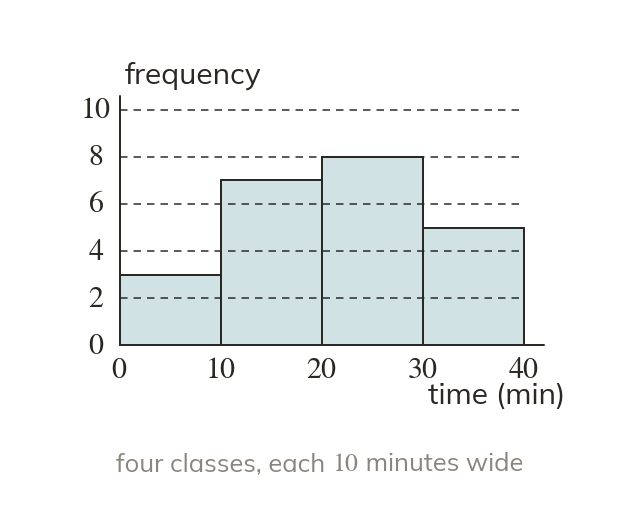
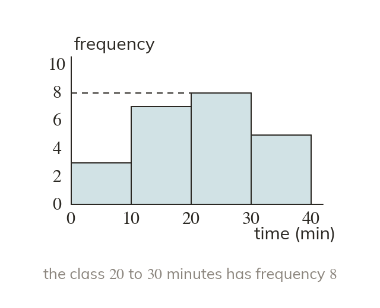
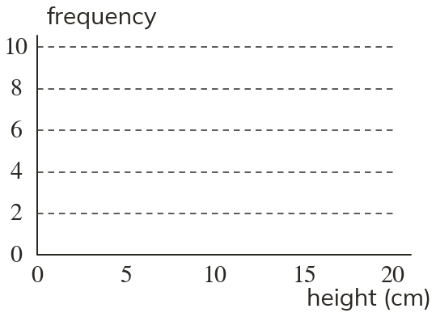
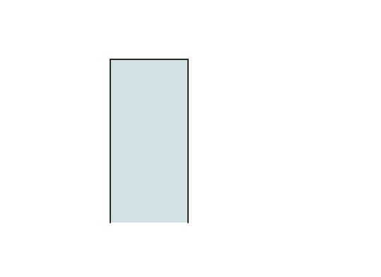
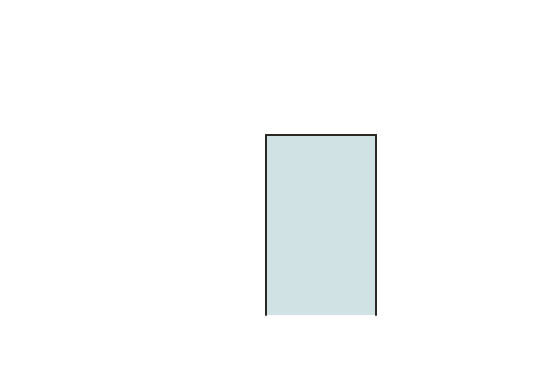
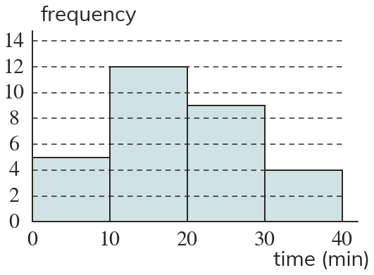
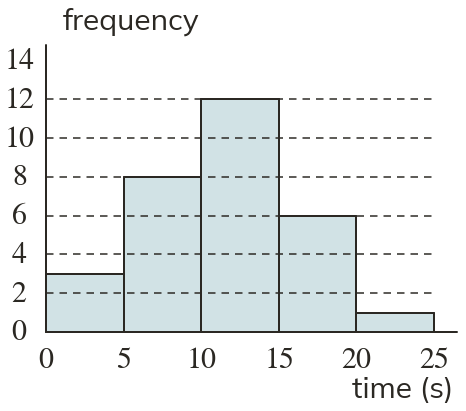
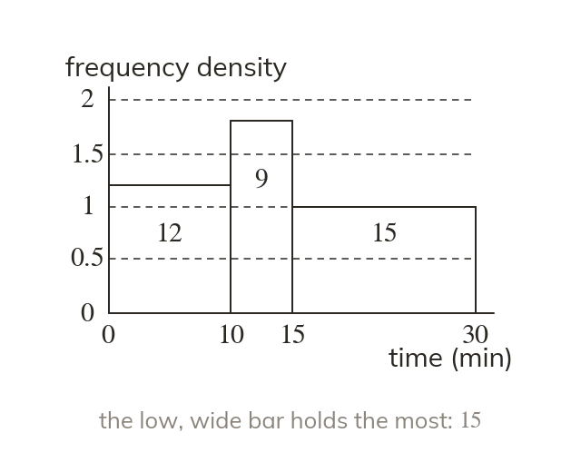
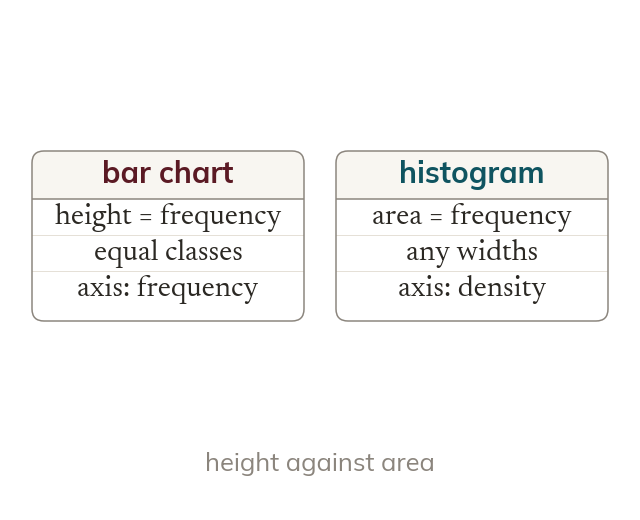

Continuous bars touch
Continuous data sits on a number scale. So the bars touch, with no gaps between the classes.
A bar chart and a histogram look alike but say different things. Knowing which one you are reading stops a tall, thin bar being mistaken for a large group.
Work down the page at your own pace. Write every answer in your book first, then click to check it.
Read each card, then follow the worked examples one step at a time.

Continuous data sits on a number scale. So the bars touch, with no gaps between the classes.

When every class has the same width, height can show frequency. Read across from the top of a bar to the scale.




Pick an answer. If it's wrong, the feedback tells you which mistake it was.
Printable worksheet — the questions with room to work.

Read each card, then follow the worked examples one step at a time.

In a histogram, the area of each bar shows its frequency. Its height is the frequency density.

A bar chart shows frequency by height. A histogram shows it by area, whatever the widths.
Pick an answer. If it's wrong, the feedback tells you which mistake it was.
Finished? Next lesson: 10H.20.2 Frequency Density and Drawing Histograms.
Log in, then search for a code to practise that skill.
Videos, worksheets and more on each part of this lesson.